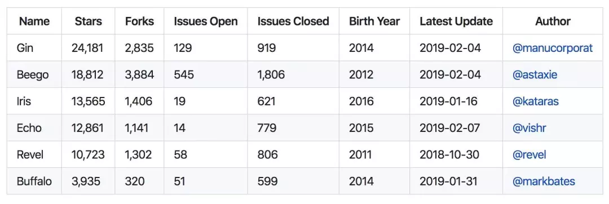
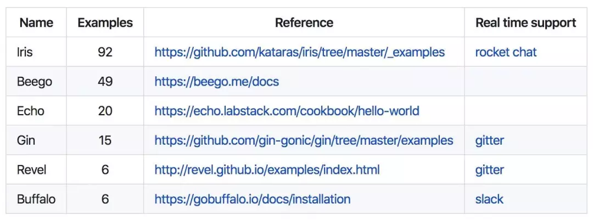
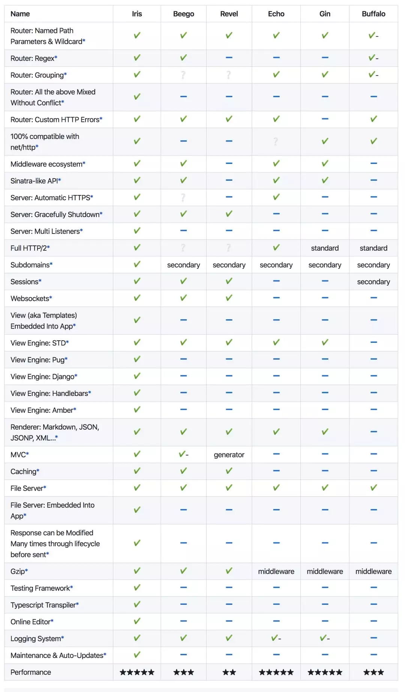

1、Gin 是什么？
Gin 是一个用 Go (Golang) 编写的 HTTP web 框架。 它是一个类似于 martini 但拥有更好性能的 API 框架, 由于 httprouter，速度提高了近 40 倍。如果你需要极好的性能，使用 Gin 吧。
2、为什么要用Gin
在 Web 开发中，开发人员经常需要使用特定框架来进行开发与维护，而开源框架 Gin 是 Go 语言中最流行的 Web 框架，其 API 调用方便，性能优越，在 Web 开发中占有非常重要的位置。
基于 Gin 框架进行 Web 开发，既可以享受到框架封装后带来的好处，又因为 Gin 框架是轻量级框架，可以非常方便地根据实际需要进行二次开发与整合，例如加入日志、链路追踪、流量控制等功能，因此成为很多公司进行 Web 开发时选型的首选。
像 Bilibili 开源的一套 Go 微服务框架 Kratos 就采用 Gin 框架进行了二次开发，加入日志、Bug 追踪、 gRPC 等功能，其自家站点也采用类似的架构进行开发。在 Go 语言中，Gin 框架在同类框架中无论是性能还是流行程度都非常领先。
3、Gin的项目地址
首页： https://github.com/gin-gonic
GIN：https://github.com/gin-gonic/gin
实例：https://github.com/gin-gonic/examples
中文文档：https://gin-gonic.com/zh-cn/docs/
4、还有哪些Web框架
Beego、Buffalo、Echo、Iris、Revel
受欢迎指数

学习曲线

框架对比
